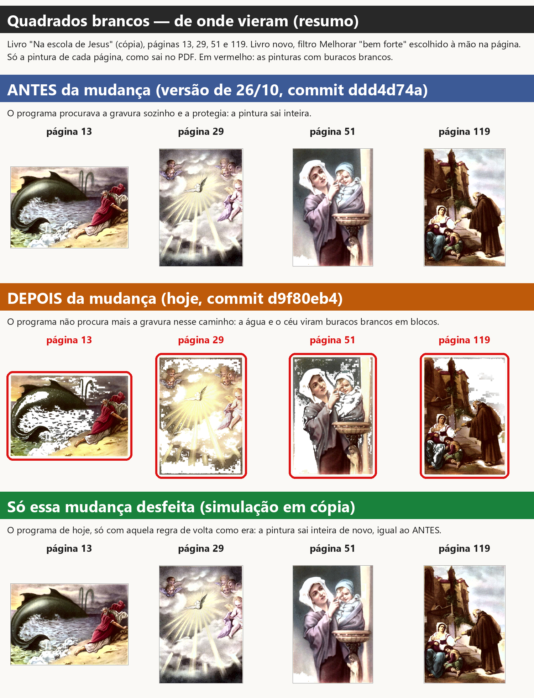
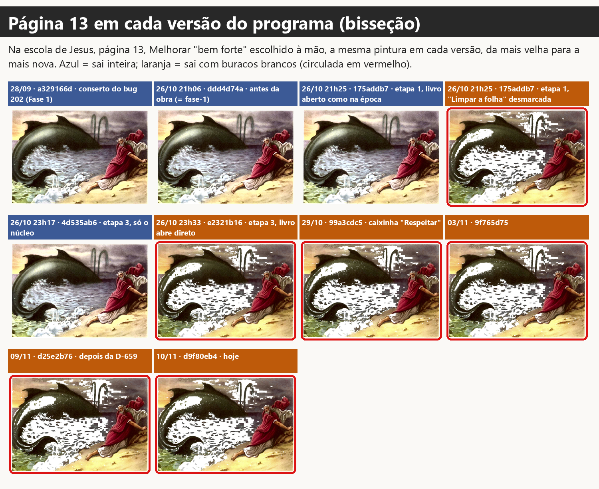
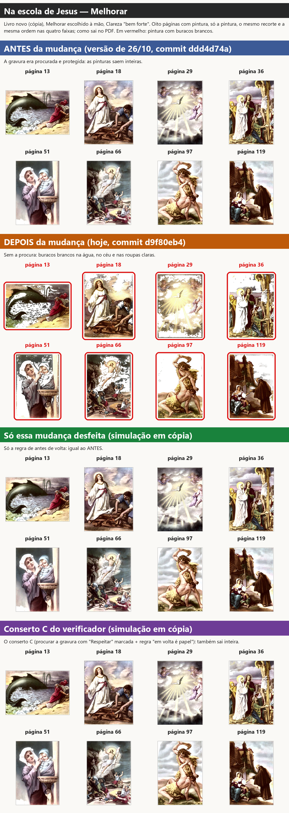
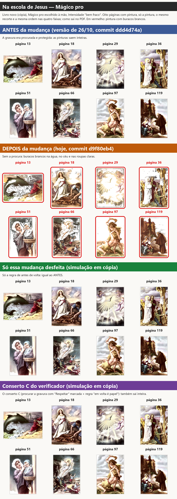
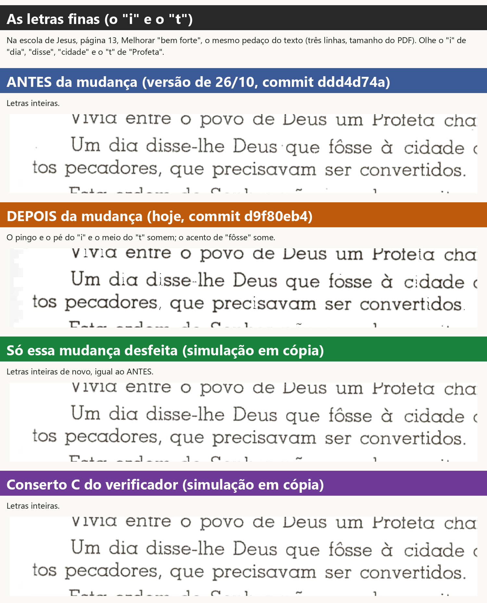
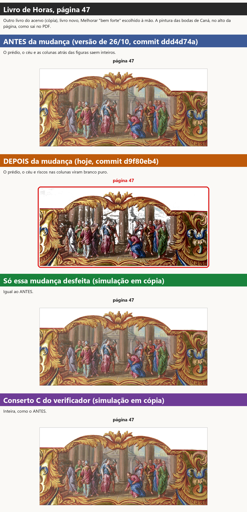
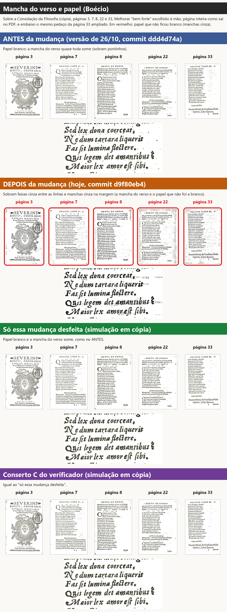
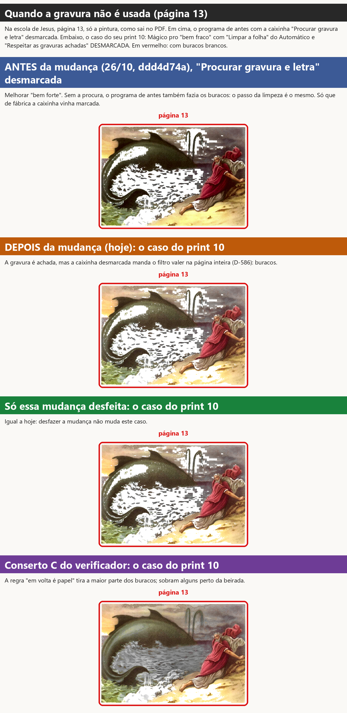

Investigador, 10/11/2026. Só investigação: nenhuma linha do programa mudou. Rodei versões antigas do programa e a de hoje nas mesmas páginas, com as mesmas escolhas, em cópias dos livros, sem abrir janela na sua tela.
A sua pergunta (Central, 10/11, "Ainda não entendi"):
"Mas antes ele não fazia isso né, você tentou usar o motor do scantailor para achar gravura e onde achar gravura ele não deixar esses pontos brancos assim, pois eu nunca tinha visto o programa fazer isso, descubra que agente fez o programa começar a fazer isso, é só você ver os testes que fizemos antes com o melhorar e magico pro."
O verificador também não errou no que mediu: o branco sai mesmo do último passo do Melhorar (a limpeza do papel). Mas esse passo existe desde agosto. O que mudou em 26/10 foi que a pintura deixou de ser procurada e protegida antes dele.
Cada imagem tem uma faixa por situação, sempre com as mesmas cores:
ddd4d74a);d9f80eb4);Em vermelho: as pinturas com buracos brancos (o nome da página e um contorno por fora).








Como testei. Peguei o programa como estava em cada data (do histórico do git, em cópias à parte) e fiz a mesma coisa em todos: abrir o Na escola de Jesus como livro novo, escolher o Melhorar "bem forte" (e depois o Mágico pro "bem fraco") na página, e desenhar a página do jeito que ela sai no PDF. Para as páginas saírem no mesmo enquadramento em todas as versões, deixei desligados o dividir, o endireitar e o cortar (o filtro não depende deles).
Página 13 (Jonas e a baleia), parte da pintura que virou buraco branco:
| versão | Melhorar | Mágico pro | gravura achada? |
|---|---|---|---|
28/09 (a329166d, conserto do anjo, Fase 1) |
0,8% | 0,8% | sim |
26/10, antes da obra (ddd4d74a = o fase-1) |
1,4% | 1,4% | sim |
hoje (d9f80eb4) |
23,5% | 27,4% | não procurada |
| hoje com só a mudança desfeita | 1,4% | 1,4% | sim |
| hoje com o conserto C | 1,4% | 1,4% | sim |
O pouco que aparece "antes" (perto de 1%) é o que já é branco no original (a espuma, o brilho da água): olhando a imagem, a pintura está inteira.
Nas oito pinturas medidas (páginas 13, 18, 29, 36, 51, 66, 97 e 119), antes: de 0,5% a 3,9%; hoje: de 9% a 29% no Melhorar e de 10% a 42% no Mágico pro.
No livro inteiro (199 páginas, as mesmas escolhas, medido página por página):
| Melhorar: páginas com buracos bem visíveis | Mágico pro: idem | páginas com letra quebrada | |
|---|---|---|---|
antes da obra (ddd4d74a) |
2 | 2 | 0 |
hoje (d9f80eb4) |
65 | 83 | 25 a 28 |
| hoje com só a mudança desfeita | 2 | 2 | 0 |
"Bem visíveis" = 6% ou mais da pintura em branco onde o original não era branco. Contando também os casos menores (2% ou mais): antes 16, hoje 115 (Melhorar) e 139 (Mágico pro), desfeita 16. As duas do "antes" (páginas 43 e 173) são céu claro que vai a branco liso, sem blocos: a basílica da página 43 é desenho de traço, e a regra da Fase 1 manda o papel de dentro dele a branco.
Nos testes de antes. Os testes do Melhorar e do Mágico pro que vocês fizeram (Fase 1, 28/09 a 02/10; conferência de 30/09, "roupa e céu do anjo" marcada BOM) foram todos com o programa de antes da obra, que procurava a gravura em toda página mostrada ("Procurar gravura e letra" vinha ligado). O conserto do anjo (bug 202, 28/09) protege o que fica dentro da gravura achada. Por isso, naquela época, não aparecia.
A página 13 em cada versão (imagem 1) mostra exatamente onde virou:
| data e hora | commit | o que é | página 13 |
|---|---|---|---|
| 26/10, 21h06 | ddd4d74a |
o programa antes da obra | inteira |
| 26/10, 21h25 | 175addb7 |
obra, etapa 1 — livro aberto como na época | inteira |
| 26/10, 21h25 | 175addb7 |
etapa 1 — com "Limpar a folha" desmarcada | buracos |
| 26/10, 23h17 | 4d535ab6 |
obra, etapa 3, só a parte de dentro | inteira |
| 26/10, 23h33 | e2321b16 |
obra, etapa 3 — o livro abre direto na área de trabalho | buracos |
| 29/10, 03/11, 09/11, 10/11 | 99a3cdc5, 9f765d75, d25e2b76, d9f80eb4 |
depois | buracos |
São duas mudanças da mesma noite, que só juntas fazem o defeito aparecer:
A regra — etapa 1 da obra (175addb7, 26/10 às 21h25, ramo obra-etapa1-2026-10-26, agente
Implementador da etapa 1; juntada à obra às 21h55, 11f9ed38). O que ela queria fazer: cumprir a sua
D-009 (sessão 1 dos testes guiados, 26/10): "eu deveria conseguir abrir o livro sem escolher nenhuma
opção para fazer tudo manualmente." Para isso, o agente fez o que é feito à mão valer no PDF mesmo com o
Automático desligado. Junto, ele decidiu sozinho um detalhe (escolha técnica nº 5 do ONDE-PAREI dele,
pela regra D-014, "obra até o fim sem pausas, os detalhes técnicos eu decido"):
"filtro escolhido à mão → caminho inteiro com esse filtro e só a marcação à mão (o detector de gravura é automático e fica desligado)"
No programa, isso é uma linha em core/pipeline.py, no começo de garantir_selecao (a função que procura
a gravura, a letra e o papel da página). Antes era: "procura, se 'Procurar gravura e letra' estiver ligado".
Ficou: "procura só se 'Limpar a folha' (o Automático) e 'Procurar gravura e letra' estiverem ligados".
Isso não foi pedido por você: foi a leitura do agente de que "procurar a gravura" é coisa do Automático.
O caminho — etapa 3 da obra (e2321b16, 26/10 às 23h33, ramo obra-etapa3-2026-10-26, agente da
etapa 3; juntada à versão de teste em 27/10 às 11h45, 427e3ae2). O que ela queria fazer: cumprir a sua
D-002 ("Trabalho automático = painel 'Automático' que abre e fecha [...] abrir o PDF sem mexer e rodar
as etapas depois"; o Kaique: "nós tínhamos que abrir direto na área de trabalho") e o "sempre abre em
Original, sem mexer". O livro passou a abrir direto na área de trabalho, com todas as etapas do Automático
desligadas (inclusive "Limpar a folha"), e o filtro escolhido no painel passou a ficar marcado como "mexido
à mão".
Juntas: desde 27/10, o Kaique abre um livro novo, escolhe o Melhorar ou o Mágico pro no painel, e o programa cai na regra da etapa 1: não procura a pintura. Sem a pintura achada, o último passo do Melhorar (a limpeza do papel) trata a água, o céu e as roupas claras como papel e pinta de branco, em blocos.
O mesmo defeito já tinha aparecido no Preto e branco, em 09/11 (página 8, print 01 da sessão 4: "todas
aquelas mudanças que a gente tinha feito [...] respeitar gravura e tudo mais no manual não está
funcionando"). A causa era a mesma regra. O conserto D-659 (88731637, 09/11) fez o programa voltar a
procurar a gravura só no Preto e branco. O agente anotou no código: "Melhorar e Magico pro a mao nao
procuram: a decisao fala do Preto e branco". Por isso o Melhorar e o Mágico pro ficaram de fora.
Sim. O "motor do ScanTailor" é o detector de gravura que o programa usa de fábrica desde 30/09 (item 1.2): ele olha a página e diz onde está a figura. Quando ele acha a figura, o Melhorar trata a figura como figura (sem a limpeza do papel por cima) e o resto como página.
Simulei, numa cópia e só dentro do processo de teste, o programa de hoje com aquela linha de volta como era
antes de 175addb7: a gravura volta a ser procurada sempre que "Procurar gravura e letra" está ligada (no
livro novo ela vem ligada). Nada mais mudou.
O que melhora:
O que custa ou muda:
tests/, a rodada
do GitHub e o gabarito inteiro.Comparado com o conserto C do verificador: nas oito pinturas, no Livro de Horas 47 e no Boécio, o resultado é praticamente o mesmo (nas pinturas, diferença de no máximo 0,07 ponto percentual; nas letras do Boécio, até 0,35). As duas diferenças: (1) o C só procura a gravura nas páginas com Melhorar ou Mágico pro e "Respeitar" marcada; o desfazer procura em toda página; (2) o C conserta também o print 10 (caixinha desmarcada), com a regra "em volta é papel"; o desfazer não.
Como o Melhorar e o Mágico pro escolhidos à mão devem voltar a proteger as pinturas? As cores são as das faixas das imagens.
Minha sugestão: o roxo, porque segue o que você disse para o Preto e branco ("não precisa procurar em todas") e também resolve o print 10. Mas o verde é o que já foi testado por vocês. Qualquer um dos dois é mudança no programa e precisa do seu "sim".
scripts/rodar_versao.py — desenha as páginas como saem no PDF com qualquer versão do programa
(DESFAZER=1: só a mudança desfeita; CONSERTO_C=1: o conserto C; LIMPAR, PROCURAR, RESPEITAR:
as caixinhas).scripts/rodar_amostra.sh e scripts/rodar_livro.sh — as páginas e o livro inteiro, uma situação por vez,
em prioridade baixa.scripts/medir.py — as medidas: buraco branco na pintura (pontos que saíram brancos onde o original não
era papel, dentro da caixa da pintura); tinta de letra que sumiu; papel que não ficou branco.scripts/resumir_livro.py, scripts/montar.py (as imagens), scripts/gravar_relatorio.py.medidas/.git worktree (ddd4d74a, 175addb7) e git archive (a329166d, 4d535ab6,
e2321b16, 99a3cdc5, 9f765d75, d25e2b76), em pastas temporárias apagadas no fim.tests/test_decisoes*.py, teste de
reversão), do GitHub e do gabarito.Editor de Impressão · gerado em 10/11/2026 às 19:48